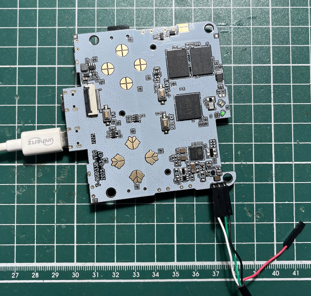

Steward
分享是一種喜悅、更是一種幸福
掌機 - PowKiddy V90S - 焊接UART
連接PC

Baudrate 115200bps
[107]HELLO! BOOT0 is starting!
[110]BOOT0 commit : 06dfa2d3
NOTICE: BL3-1: v1.0(debug):0f6655c
NOTICE: BL3-1: Built : 15:24:20, 2022-07-05
NOTICE: BL3-1 commit: 8
NOTICE: cpuidle init version V2.0
ERROR: Error initializing runtime service tspd_fast
NOTICE: BL3-1: Preparing for EL3 exit to normal world
NOTICE: BL3-1: Next image address = 0x4a000000
[01.277]bat_vol=29, ratio=0psr = 0x1d3
[01.281][mmc]: mmc driver ver uboot2018:2021-01-14 19:04:00
[01.287][mmc]: get sdc_type fail and use default host:tm1.
[01.298][mmc]: Using default timing para
[01.302][mmc]: SUNXI SDMMC Controller Version:0x50300
[01.319][mmc]: card_caps:0x3000000a
[01.322][mmc]: host_caps:0x3000003f
[03.174]set disp.dev2_output_type fail. using defval=0
[03.179]disp 0, clk: pll(150000000),clk(150000000),dclk(25000000) dsi_rate(150000000)
clk real:pll(288000000),clk(288000000),dclk(72000000) dsi_rate(150000000)
[03.569]set disp.disp_rotation_used fail. using defval=0
[03.574]set disp.degree0 fail. using defval=0
[04.068][ARISC ERROR] :get [allwinner,sunxi-hwspinlock] device node error
[SCP] :sunxi-arisc driver begin startup 2
[SCP] :0x1
[SCP] :arisc version: [ramsr-xt-818anit.2v-er-5saelid-e]
[SCP] :arisc startup ready
[SCP] :arisc startup notify message feedback
[SCP] :send hard sync feedback message: 0x900200
[SCP] :sunxi-arisc driver v1.10 is starting
[04.102]Item0 (Map) magic is bad
[04.104]the secure storage item0 copy0 magic is bad
[04.110]Item0 (Map) magic is bad
[04.112]the secure storage item0 copy1 magic is bad
[04.117]Item0 (Map) magic is bad
[04.139]Could not find nodeoffset for used ext pmu:reg-tcs0
[04.151]verify success!
[04.917]Starting kernel ...
[04.919][mmc]: MMC Device 2 not found
[04.923][mmc]: mmc 2 not find, so not exit
[ 0.812199] axp2101-regulator axp2101-regulator.0: Setting DCDC frequency for unsupported AXP variant
[ 0.815803] axp2101-regulator axp2101-regulator.0: Error setting dcdc frequency: -22
[ 0.909566] ion_heap_create: Invalid heap type 6
[ 1.401605] disp soc@03000000:disp1@1: unable to map de registers
[ 1.494044] uart uart0: get regulator failed
[ [ 1.681841] sunxi_key_init: get key count failed
[ 1.686918] sunxi_gpadc_setup: get channel scan data failed
[ 6.335866] [audio] hp_detect_case: 1
[ 6.414491] cpu cpu1: opp_list_debug_create_link: Failed to create link
[ 6.421962] cpu cpu1: _add_opp_dev: Failed to register opp debugfs (-12)
[ 6.429637] cpu cpu2: opp_list_debug_create_link: Failed to create link
[ 6.437149] cpu cpu2: _add_opp_dev: Failed to register opp debugfs (-12)
[ 6.444771] cpu cpu3: opp_list_debug_create_link: Failed to create link
[ 6.452235] cpu cpu3: _add_opp_dev: Failed to register opp debugfs (-12)
BOOTREASON: usb
INIT: /sbin/init
CONSOLE DEVICE is ttyS0
do mount /dev/mmcblk0p4 to /boot_root
Mounted /dev/mmcblk0p4 as /boot_root
INIT: version 3.04 booting
INIT: No inittab.d directory found
mount: /proc: proc alr[ 8.649790] pvrsrvkm gpu: sunxi_decide_pll: give us an error freq:456000000
[ 8.657624] pvrsrvkm gpu: sunxi_decide_pll: give us an error freq:399000000
Using default driver configuration (no powervr.ini present)
/etc/init.d/rcS: 51: cannot create /var/run/boot.log: Directory nonexistent
/etc/init.d/rcS: 51: cannot create /var/run/boot.log: Directory nonexistent
/etc/init.d/rcS: 51: cannot create /var/run/boot.log: Directory nonexistent
Option -t is no longer valid, please specify it in /etc/watchdog.conf.
watchdog version 5.16, usage:
watchdog [options]
options:
-c | --config-file <file> specify location of config file
-f | --force don't sanity-check config or use PID file
-F | --foreground run in foreground
-X | --loop-exit <number> run a fixed number of loops then exit
-q | --no-action do not reboot or halt
-b | --softboot soft-boot on error
-s | --sync sync filesystem
/etc/init.d/rcS: 51: cannot create /var/run/boot.log: Directory nonexistent
-v | --verbose verbose messages
Tue Jan 1 01:00:00 UTC 1980
Starting system message bus: Could not create /var/lib/dbus/machine-id.OwzvgzuJ: No such file or directory
dbus[241]: Unknown username "pulse" in message bus configuration file
done
/etc/init.d/rcS: 51: cannot create /var/run/boot.log: Directory nonexistent
Starting syslogd: /etc/init.d/rcS: 51: cannot create /var/run/boot.log: Directory nonexistent
/etc/init.d/rcS: 51: cannot create /var/run/boot.log: Directory nonexistent
/etc/init.d/rcS: 51: cannot create /var/run/boot.log: Directory nonexistent
syslogd[253]: Error opening log file: /var/log/auth.log: No such file or directory
syslogd[253]: Error opening log file: /var/log/syslog: No such file or directory
syslogd[253]: Error opening log file: /var/log/kern.log: No such file or directory
syslogd[253]: Error opening log file: /var/log/mail.log: No such file or directory
syslogd[253]: Error opening log file: /var/log/mail.err: No such file or directory
syslogd[253]: Error opening log file: /var/log/messages: No such file or directory
OK
Current board: powkiddy-v90s. Capabilities already generated.
Audio jack state: 0
/etc/init.d/rcS: 51: cannot create /var/run/boot.log: Directory nonexistent
/userdata/system/batocera.conf: No such file or directory
/etc/init.d/rcS: 51: cannot create /var/run/boot.log: Directory nonexistent
Running sysctl: OK
insmod: ERROR: could not load module /lib/modules/4.9.191/xradio_mac.ko: No such file or directory
insmod: ERROR: could not load module /lib/modules/4.9.191/xradio_core.ko: No such file or directory
insmod: ERROR: could not load module /lib/modules/4.9.191/xradio_wlan.ko: No such file or directory
insmod: ERROR: could not load module /lib/modules/4.9.191/xt*: No such file or directory
insmod: ERROR: could not load module /lib/modules/4.9.191/ipt_REJECT.ko: No such file or directory
insmod: ERROR: could not load module /lib/modules/4.9.191/iptable_filter.ko: No such file or directory
/etc/init.d/rcS: 51: cannot create /var/run/boot.log: Directory nonexistent
/etc/init.d/rcS: 51: cannot create /var/run/boot.log: Directory nonexistent
Restoring random seed: done.
Connection failure: Connection refused
pa_context_connect() failed: Connection refused
MALI_CreateWindow:0x3bafb780 done.
Connection failure: Connection refused
pa_context_connect() failed: Connection refused
/etc/init.d/S04populate: 43: test: a133: unexpected operator
Connection failure: Connection refused
pa_context_connect() failed: Connection refused
Populating /dev using udev: Simple mixer control 'LINEOUT',0
Capabilities: pswitch pswitch-joined
Playback channels: Mono
Mono: Playback [on]
FOUND LINE: 27: Starting udev device manager...
done
alsa-lib main.c:1554:(snd_use_case_mgr_open) error: failed to import hw:0 use case configuration -2
Found hardware: "audiocodec" "" "" "" ""
Hardware is initialized using a generic method
Starting pipewire: Connection failure: Connection refused
pa_context_connect() failed: Connection refused
Connection failure: Connection refused
pa_context_connect() failed: Connection refused
Connection failure: Connection refused
pa_context_connect() failed: Connection refused
Connection failure: Connection refused
pa_context_connect() failed: Connection refused
Connection failure: Connection refused
pa_context_connect() failed: Connection refused
Connection failure: Connection refused
pa_context_connect() failed: Connection refused
KO
Starting network: Starting share: FOUND LINE: 61: Resizing SHARE partition...
OK
Failed to set up async io, using sync io.
Failed to set up async io, using sync io.
FUSE exfat 1.4.0 (libfuse3)
WARN: volume was not unmounted cleanly.
FOUND LINE: 61: Resizing SHARE partition...
done.
FOUND LINE: 66: Populating SHARE partition...
Updating /userdata/screenshots
Starting system: dos2unix: converting file /userdata/system/batocera.conf to Unix format...
done.
Couldn't get a file descriptor referring to the console.
Brightness set to: 127
false
Stopping usb-gadget: Starting rngd: OK
Starting securepasswd: Starting connman: tar: bluetooth: time stamp 2025-01-17 05:21:11 is 1421551265.999255498 s in the future
Starting ntpd: Starting fake hwclock: loading system time.
OK
Starting dropbear sshd: Fri Jan 24 06:11:09 UTC 2025
OK
Starting thd: OK
OK
Starting battery-saver.sh.
Collecting device stats
battery-saver.sh started OK
INIT: Entering runlevel: 3
false
knulli
Starting N�find: '/userdata/system/services': No such file or directory
System Service: enable_wifi_dongle -> service is disabled [ok]
System Service: es_web_notifier -> service is disabled [ok]
System Service: ledspicer -> service is disabled [ok]
System Service: lid_shutdown -> service is disabled [ok]
System Service: pigpio -> service is disabled [ok]
System Service: samba -> service is disabled [ok]
System Service: syncthing -> service is disabled [ok]
System Service: zramswap -> service is disabled [ok]
FAIL
_ ___ _ _ _ _ _ ___
| |/ / \ | | | | | | | | |_ _|
| ' /| \| | | | | | | | | |
| . \| |\ | |_| | |___| |___ | |
|_|\_\_| \_|\___/|_____|_____|___|
Starting NFS services: OK
Starting NFS daemon: done.
Network connection unavailable. Retrying in 60 seconds...
/usr/bin/batocera-resolution currentMode
/usr/bin/batocera-resolution currentResolution
error: invalid command listOutputs
Simple mixer control 'HpSpeaker',0
Capabilities: pswitch pswitch-joined
Playback channels: Mono
Mono: Playback [on]
/usr/bin/batocera-resolution currentMode
/usr/bin/batocera-resolution currentResolution
error: invalid command currentOutput
/usr/bin/batocera-resolution currentMode
/usr/bin/batocera-resolution currentResolution
error: invalid command listOutputs
Simple mixer control 'Headphone',0
Capabilities: volume volume-joined pswitch pswitch-joined
Playback channels: Mono
Capture channels: Mono
Limits: 0 - 7
Mono: 1 [14%] [-36.00dB] Playback [on]
/usr/bin/batocera-resolution currentMode
/usr/bin/batocera-resolution currentResolution
error: invalid command listOutputs
/usr/bin/batocera-resolution currentMode
/usr/bin/batocera-resolution currentResolution
error: invalid command listOutputs
/usr/bin/batocera-resolution currentMode
/usr/bin/batocera-resolution currentResolution
error: invalid command setOutput
/usr/bin/batocera-resolution currentMode
/usr/bin/batocera-resolution currentResolution
error: invalid command currentOutput
/usr/bin/batocera-resolution currentMode
/usr/bin/batocera-resolution currentResolution
error: invalid command supportSystemReflection
Model: Powkiddy_V90s
System: Linux 4.9.191
OK
Architecture: aarch64
Board: powkiddy-v90s
CPU Cores: 4
CPU Max Frequency: 1416 MHz
/usr/bin/batocera-resolution currentMode
/usr/bin/batocera-resolution currentResolution
error: invalid command currentOutput
Temperature: 51°C
Available Memory: 863/977 MB
Display Resolution: 640x480
Display Refresh Rate: .Hz
Data Partition Format: exfat
Bluetooth adapter name has been set to: Powkiddy_V90s
Data Partition Available Space: 8.0G
Battery: 0%
done.
OS version: gladiator-mod-v1.9a-ii 2025/08/12 23:34
[root@KNULLI /userdata/system]# MALI_CreateWindow:0x315a3f40 done.
[root@KNULLI /userdata/system]# 2025-01-24 07:11:13 ERROR System "amiga" is missing name, extension, or command!
[root@KNULLI /userdata/system]#
[root@KNULLI /userdata/system]# 2025-01-24 07:11:14 ERROR System "setup" path does not exist !
2025-01-24 07:11:14 ERROR System "msx" is missing name, extension, or command!
2025-01-24 07:11:14 ERROR TTS::setLanguage() - Failed with zh_TW (Mandarin)